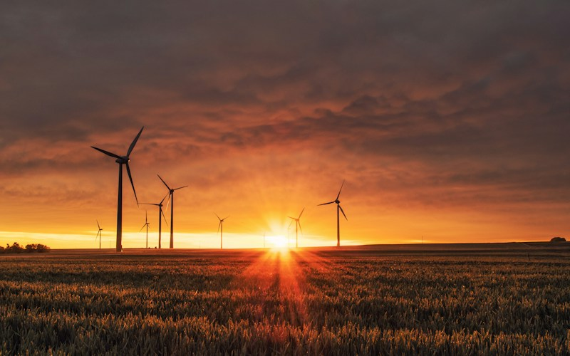
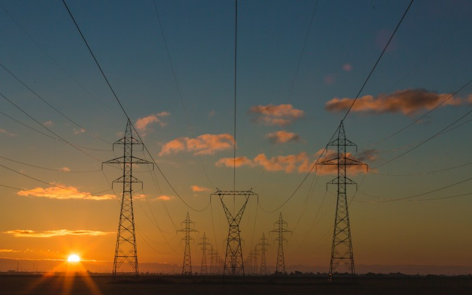
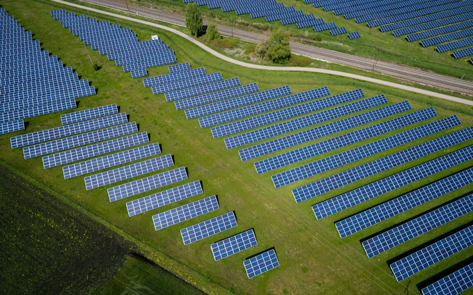
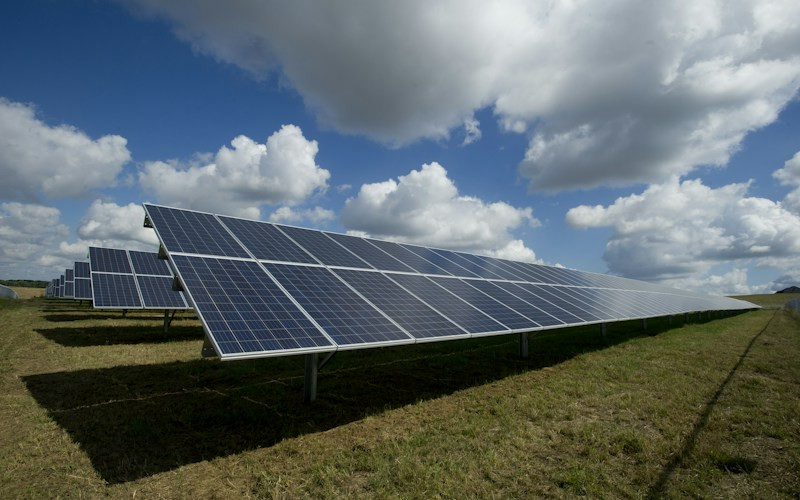
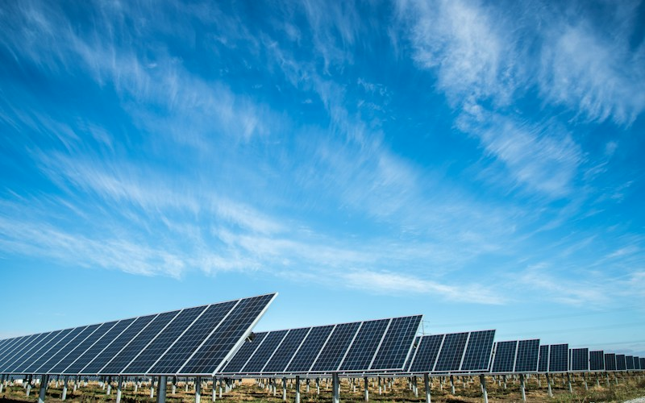
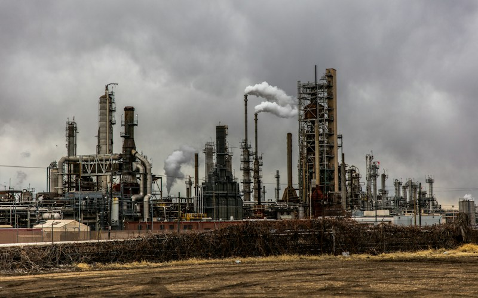
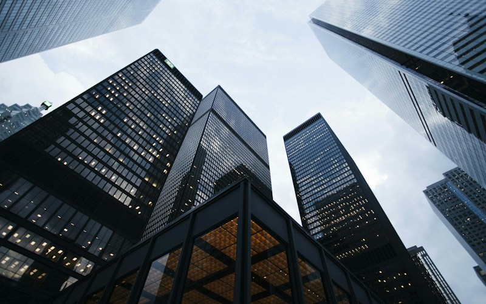

Multilateral Partnerships
IRENA
International Renewable Energy Agency supporting international cooperation and the transition to renewable energy.
Explore organisations and initiatives shaping the renewable energy landscape. These profiles highlight the ideas, capabilities and collaboration models informing our approach to a more connected energy future.

Multilateral Partnerships
International Renewable Energy Agency supporting international cooperation and the transition to renewable energy.

Multilateral Partnerships
Development institution supporting countries through financing, knowledge and programmes, including energy access.

Multilateral Partnerships
Regional development bank with an energy portfolio supporting electricity access and renewable energy in Africa.

Multilateral Partnerships
Intergovernmental organisation advancing solar energy through international collaboration and programmes.

Initiatives
Organisation working to accelerate energy access and the energy transition in emerging and developing countries.

Initiatives
World Bank Group and African Development Bank Group initiative focused on expanding electricity access in Africa.
Initiatives
International initiative bringing governments together to accelerate clean energy innovation.

Initiatives
Renewable Energy and Energy Efficiency Partnership works to develop clean energy markets and energy access in the Global South.

Co-operation Platforms
Renewable energy network bringing together stakeholders and sharing knowledge about the renewable energy transition.
Co-operation Platforms
International industry association connecting the solar sector and representing its voice in global energy discussions.

Co-operation Platforms
International forum for collaboration on clean energy policies, programmes and deployment.

Bilateral Partnerships
JinkoSolar offers photovoltaic modules and solar-plus-storage solutions for residential, commercial and utility-scale applications.
Bilateral Partnerships
Trinasolar provides photovoltaic modules, solar tracking systems and energy storage solutions through its solar technology portfolio.
Bilateral Partnerships
German international cooperation organisation working on sustainable development, including energy-related projects.
Bilateral Partnerships
Japan International Cooperation Agency supports development cooperation across sectors including energy and infrastructure.
Solar projects bring together property owners, customers and delivery teams. Clear responsibilities help each participant understand how the project will be assessed and progressed.
Start with ownership, access and the intended use of the roof or site.
Identify who will coordinate assessments, proposals, installation and ongoing communication.
Record responsibilities and decision points before making commitments.